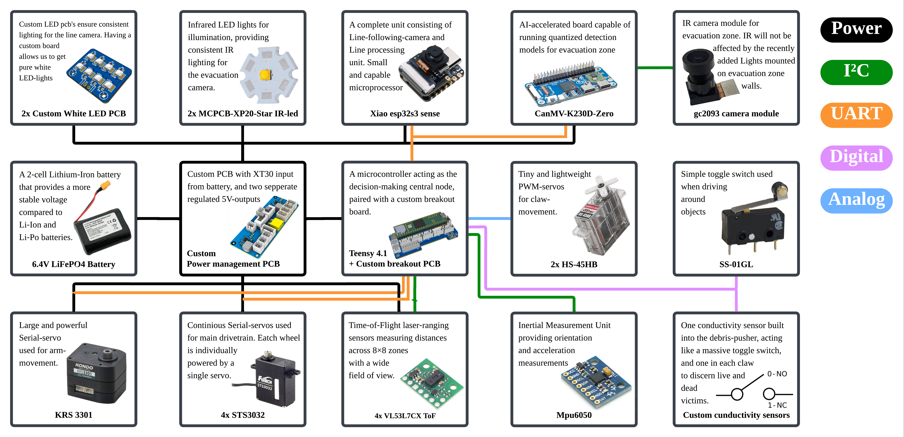

Inside the robot
PCB schematic and electronics stack
I designed the electrical system from power distribution and the custom PCB through sensing, on-device inference, motor control, and the serial protocol that connects them.

Inside the robot
I designed the electrical system from power distribution and the custom PCB through sensing, on-device inference, motor control, and the serial protocol that connects them.
